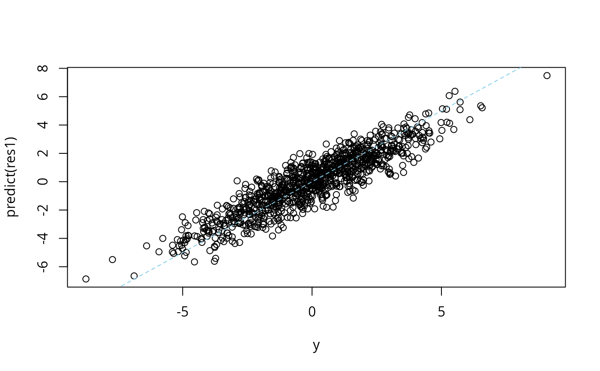
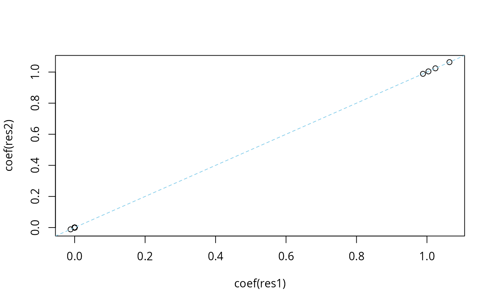

Sum of Single Effects (SuSiE) Regression
Source:R/susie.R, R/susie_ss.R, R/susie_zzz_auto.R
susie.RdPerforms Bayesian multiple linear regression of Y on
X; that is, this function fits the regression model \(Y = \sum_l
X b_{l=1}^L + e\), where elements of e are i.i.d. normal with
zero mean and variance residual_variance, and
\(\sum_{l=1}^L b_l\) is a vector of length p representing the
effects to be estimated. The “susie assumption” is that each
\(b_l\) has exactly one non-zero element. The prior on the
non-zero element is normal with zero mean and variance var(Y)
* scaled_prior_variance. The model is fitted using the
“Iterative Bayesian Stepwise Selection” (IBSS) algorithm.
See also susie_trendfilter for applying susie to
non-parametric regression, particularly changepoint problems.
susie( X, Y, L = min(10, ncol(X)), scaled_prior_variance = 0.2, residual_variance = NULL, prior_weights = NULL, null_weight = NULL, standardize = TRUE, intercept = TRUE, estimate_residual_variance = TRUE, estimate_prior_variance = TRUE, estimate_prior_method = c("optim", "EM", "simple"), check_null_threshold = 0, prior_tol = 1e-09, residual_variance_upperbound = Inf, s_init = NULL, coverage = 0.95, min_abs_corr = 0.5, compute_univariate_zscore = FALSE, na.rm = FALSE, max_iter = 100, tol = 0.001, verbose = FALSE, track_fit = FALSE, residual_variance_lowerbound = var(drop(Y))/10000, refine = FALSE ) susie_suff_stat( bhat, shat, R, n, var_y, XtX, Xty, yty, maf = NULL, maf_thresh = 0, L = 10, scaled_prior_variance = 0.2, residual_variance = NULL, estimate_residual_variance = TRUE, estimate_prior_variance = TRUE, estimate_prior_method = c("optim", "EM", "simple"), check_null_threshold = 0, prior_tol = 1e-09, r_tol = 1e-08, prior_weights = NULL, null_weight = NULL, standardize = TRUE, max_iter = 100, s_init = NULL, intercept_value = 0, coverage = 0.95, min_abs_corr = 0.5, tol = 0.001, verbose = FALSE, track_fit = FALSE, check_input = FALSE, refine = FALSE ) susie_auto( X, Y, L_init = 1, L_max = 512, verbose = FALSE, init_tol = 1, standardize = TRUE, intercept = TRUE, max_iter = 100, tol = 0.01, ... )
Arguments
| X | An n by p matrix of covariates. |
|---|---|
| Y | The observed responses, a vector of length n. |
| L | Number of components (nonzero coefficients) in the susie regression model. If L is larger than the number of covariates, p, L is set to p. |
| scaled_prior_variance | The scaled prior variance. This is
either a scalar or a vector of length |
| residual_variance | Variance of the residual. If
|
| prior_weights | A vector of length p, in which each entry gives the prior probability that corresponding column of X has a nonzero effect on the outcome, Y. |
| null_weight | Prior probability of no effect (a number between 0 and 1, and cannot be exactly 1). |
| standardize | If |
| intercept | If |
| estimate_residual_variance | If
|
| estimate_prior_variance | If |
| estimate_prior_method | The method used for estimating prior
variance. When |
| check_null_threshold | When the prior variance is estimated,
compare the estimate with the null, and set the prior variance to
zero unless the log-likelihood using the estimate is larger by this
threshold amount. For example, if you set
|
| prior_tol | When the prior variance is estimated, compare the
estimated value to |
| residual_variance_upperbound | Upper limit on the estimated
residual variance. It is only relevant when
|
| s_init | A previous susie fit with which to initialize. |
| coverage | A number between 0 and 1 specifying the “coverage” of the estimated confidence sets. |
| min_abs_corr | Minimum absolute correlation allowed in a credible set. The default, 0.5, corresponds to a squared correlation of 0.25, which is a commonly used threshold for genotype data in genetic studies. |
| compute_univariate_zscore | If |
| na.rm | Drop any missing values in Y from both X and Y. |
| max_iter | Maximum number of IBSS iterations to perform. |
| tol | A small, non-negative number specifying the convergence
tolerance for the IBSS fitting procedure. The fitting procedure
will halt when the difference in the variational lower bound, or
“ELBO” (the objective function to be maximized), is
less than |
| verbose | If |
| track_fit | If |
| residual_variance_lowerbound | Lower limit on the estimated
residual variance. It is only relevant when
|
| refine | If |
| bhat | A p-vector of estimated effects. |
| shat | A p-vector of standard errors. |
| R | A p by p symmetric, positive semidefinite matrix. It
can be \(X'X\), the covariance matrix \(X'X/(n-1)\), or a
correlation matrix. It should be estimated from the same samples
used to compute |
| n | The sample size. |
| var_y | The sample variance of y, defined as \(y'y/(n-1)\).
When the sample variance cannot be provided, the coefficients
(returned from |
| XtX | A p by p matrix \(X'X\) in which the columns of X are centered to have mean zero. |
| Xty | A p-vector \(X'y\) in which y and the columns of X are centered to have mean zero. |
| yty | A scalar \(y'y\) in which y is centered to have mean zero. |
| check_input | If |
| L_init | The initial value of L. |
| L_max | The largest value of L to consider. |
| init_tol | The tolerance to passed to |
| ... | Additional arguments passed to |
Value
A "susie" object with some or all of the following
elements:
An L by p matrix of posterior inclusion probabilites.
An L by p matrix of posterior means, conditional on inclusion.
An L by p matrix of posterior second moments, conditional on inclusion.
A vector of length n, equal to X %*% colSums(alpha
* mu).
log-Bayes Factor for each single effect.
log-Bayes Factor for each variable and single effect.
Intercept (fixed or estimated).
Residual variance (fixed or estimated).
Prior variance of the non-zero elements of b, equal to
scaled_prior_variance * var(Y).
The value of the variational lower bound, or “ELBO” (objective function to be maximized), achieved at each iteration of the IBSS fitting procedure.
Vector of length n containing the fitted values of the outcome.
Credible sets estimated from model fit; see
susie_get_cs for details.
A vector of length p giving the (marginal) posterior inclusion probabilities for all p covariates.
A vector of univariate z-scores.
Number of IBSS iterations that were performed.
TRUE or FALSE indicating whether
the IBSS converged to a solution within the chosen tolerance
level.
A p-vector of t(X) times the fitted values,
X %*% colSums(alpha*mu).
Details
susie_suff_stat performs sum of single-effect
linear regression with summary statistics. The required summary
data are either: bhat, shat, the p by p symmetric,
positive semidefinite correlation (or covariance) matrix R,
the sample size n, and the variance of y; or the p by p
matrix \(X'X\), the p-vector \(X'y\), the sum of squares
\(y'y\), and the sample size n. The summary statistics
should come from the same individuals. Both the columns of X and
the vector y should be centered to have mean zero before computing
these summary statistics; you may also want to scale each column of
X and y to have variance 1 (see examples).
susie_auto is an attempt to automate reliable running of susie even on hard problems. It implements a three-stage strategy for each L: first, fit susie with very small residual error; next, estimate residual error; finally, estimate the prior variance. If the last step estimates some prior variances to be zero, stop. Otherwise, double L, and repeat. Initial runs are performed with relaxed tolerance; the final run is performed using the default susie tolerance.
References
G. Wang, A. Sarkar, P. Carbonetto and M. Stephens (2020). A simple new approach to variable selection in regression, with application to genetic fine-mapping. Journal of the Royal Statistical Society, Series B https://doi.org/10.1101/501114.
Examples
# susie example. set.seed(1) n = 1000 p = 1000 beta = rep(0,p) beta[1:4] = 1 X = matrix(rnorm(n*p),nrow = n,ncol = p) X = scale(X,center = TRUE,scale = TRUE) y = drop(X %*% beta + rnorm(n)) res1 = susie(X,y,L = 10) plot(beta,coef(res1)[-1])# susie_suff_stat example. input_ss = compute_ss(X,y,standardize = TRUE) res2 = with(input_ss, susie_suff_stat(XtX = XtX,Xty = Xty,yty = yty,n = n,L = 10)) plot(coef(res1)[-1],coef(res2)[-1])